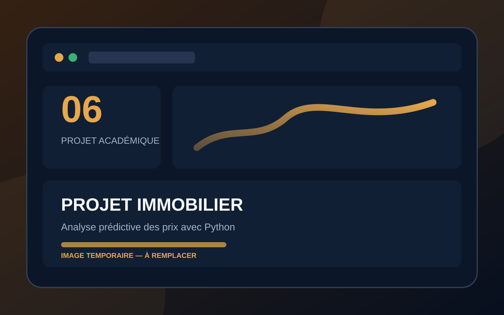

Étude de cas
Projet immobilier — Analyse prédictive des prix avec Python
Modélisation prédictive des prix immobiliers et clustering automatique des opportunités.

Présentation et contexte
Les Plus Beaux Logis de Paris souhaitaient anticiper les prix et réduire le temps consacré à l’identification manuelle de la nature des biens.
Objectif
Prédire la valeur des biens et classer automatiquement les opportunités immobilières.
Besoin ou problème
Les équipes avaient besoin d’accélérer l’évaluation des opportunités et de mieux valoriser leur portefeuille.
Résultat attendu
Un modèle de prédiction, une estimation du portefeuille et une méthode de regroupement automatique.
Mon rôle et mes réalisations
J’ai exploré les données, sélectionné les variables, entraîné les modèles, évalué leurs performances et préparé une restitution adaptée.
Principales fonctionnalités
- Évolution des prix
- Régression
- Erreur moyenne
- Valorisation
- Clustering
- Classement de nouveaux biens
Outils et technologies
Compétences mobilisées
- Analyse exploratoire
- Machine learning
- Régression
- Clustering
- Évaluation
- Recommandation
Savoir-être exploités
- Esprit critique
- Pédagogie
- Rigueur
- Prise de recul
Livrables principaux
Notebook, valorisation des actifs, clustering et présentation client.